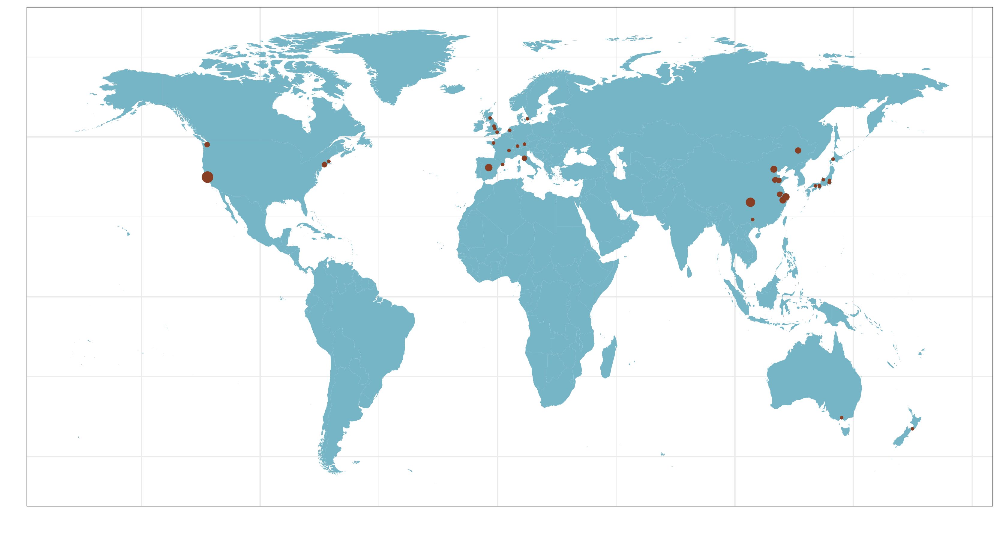

👤 About me
I am a Postdoctoral Research Fellow in Prof. Michael Snyder’s lab at Stanford University School of Medicine. My overarching research interests are bioinformatics algorithms development for multi-omics data, and their application to precision medicine. Specifically, I am interested in bioinformatics algorithm development, including 1) Comprehensive analysis workflow and deep learning for LC-MS data, 2) Metabolic network analysis, 3) Wearable and multi-omics data integration, and 4) microbiome and metabolome data integration. I also employed the developed bioinformatics algorithms as a unique systems biology approach to study the potential biomarkers and mechanisms of 1) pregnancy and related diseases, 2) aging and related diseases, and 3) cancer. More tools and projects I developed can be found in the Projects part.
Now I am also the member of Stanford Chinese Postdoctral Association (SCPA). Feel free to let me know if you want to join us and contribute to the amazing community!
🐶 🏫 🈸 😄 👊 ✊ 👨👩👦 🐼 🌏 🎉 🇨🇳
🧑🎓 Experiences
👨🏫 Advisor: Prof. Michael P. Snyder
🧪 Research:
- Metabolomics and System Biology
- Multi-omics data analysis and their application in healthcare
- Software and algorithm development for metabolomics and other omics data
📃 Publications


💻 Projects


📥 Contact
- shenxt1990@outlook.com
- +1 571-267-9283
- 3165 Porter Drive, Palo Alto, CA 94304


🐕🦺 Journal Referee


{kind=link}
🏅 Awards
🦮 Academic Service
🤝 Collaborators
Academia
Dr. Chuchu Wang
Postdoc
Stanford University
Dr. Daniel Panyard
Postdoc
Stanford University
Dr. Liang Liang
Research Scientist
Stanford University
Dr. Nasim Barapour
Postdoc
Stanford University
Dr. Wei Shao
Assistant Professor
University of Florida
Dr. Xin Zhou
Postdoc
Stanford University
Dr. Yan Hong
Postdoc
Yale University
Prof. Caroline Johnson
Associate Professor
Yale University
Prof. Michael Snyder
Professor
Stanford University
Prof. Peng Gao
Assistant Professor
University of Pittsburgh
Prof. Sai Zhang
Assistant Professor
University of Florida
Prof. Zheng-Jiang Zhu
Professor
Chinese Academy of Sciences
Industry
Dr. Daniel Hornburg
Vice President
Seer
Dr. Ryan Kellogg
Founder/CEO
RTHM
Dr. Si Wu
Research Scientist
AbbVie
Dr. Songjie Chen
Research Scientist
Merck

Map of Collaborators